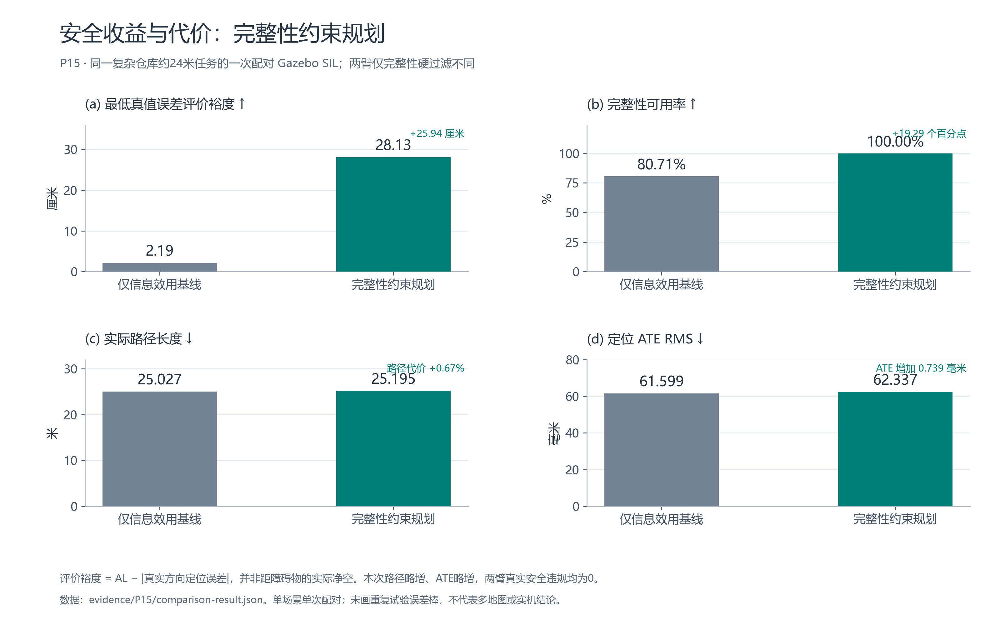
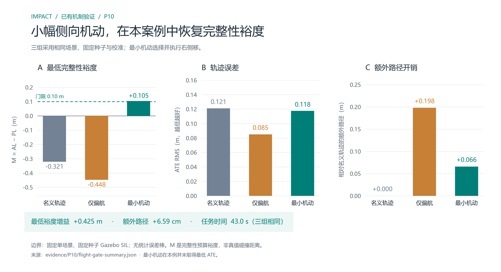
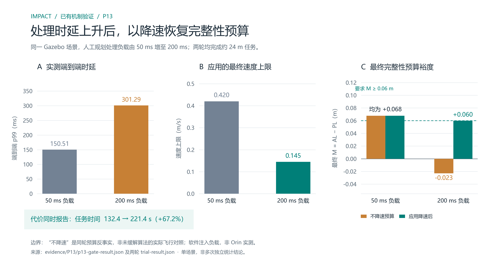
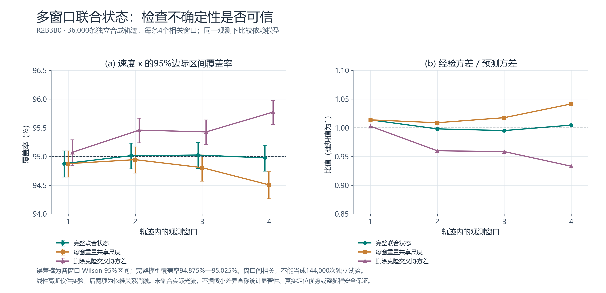
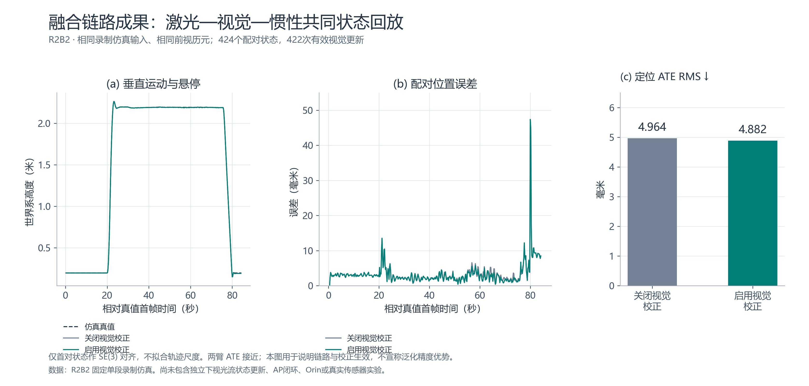

IMPACT · 现有实验图集
2026-10-20 · 五张实测结果与软件验证图，保留原始数据来源、限制及代价。本次只重绘已有结果，没有新增实验或硬件测试。支持PNG高清图与PDF/SVG矢量图。
1. 完整性约束规划的收益与代价
固定仓库一次配对：最低真值误差评价裕度2.19→28.13厘米，可用率80.71%→100%；路径+0.67%，ATE略增0.739毫米。

裕度定义为AL−|真实方向定位误差|，不是障碍净空；不代表多场景统计或实机结论。
PNG · PDF · SVG
2. 小幅侧移恢复完整性预算
名义轨迹/仅偏航/最小机动三组对照；最小机动最低AL−PL为+0.105米，额外路径6.59厘米。

固定单场景与种子；最小机动并非ATE最优。
PNG · PDF · SVG
3. 处理时延、速度与完整性预算联动
人工规划负载50→200毫秒；端到端p99为150.51→301.29毫秒；限速0.420→0.145米/秒，任务132.4→221.4秒。

不降速预算是同轮反事实计算，不是未缓解算法的实际飞行试验；非Orin实测。
PNG · PDF · SVG
4. 多窗口联合状态一致性
36,000条独立合成轨迹，每条4个相关窗口；完整模型各窗95%边际区间覆盖率94.875%—95.025%。

线性高斯软件实验；消融方法故意删除依赖，不是SOTA基线。窗口相关，不可当成144,000次独立试验。
PNG · PDF · SVG
5. 激光—视觉—惯性融合回放
同段仿真数据424个配对状态，422次有效视觉更新；两臂ATE为4.964/4.882毫米。

单bag回放与链路验证，微小差异不支持泛化精度优势；尚无独立下视光流状态更新、AP闭环或硬件验证。
PNG · PDF · SVG
数据出处与校验：figures.json · 论文证据保全检查 · 重绘说明